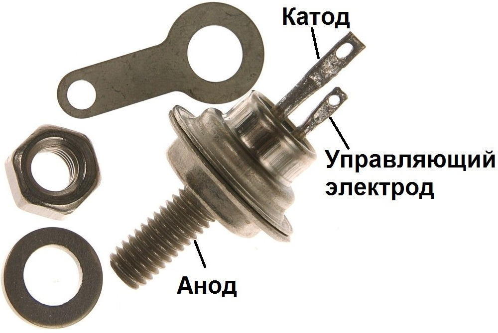
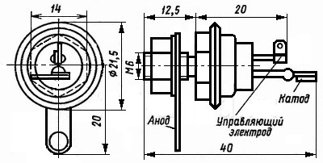

Тиристоры КУ202
Тиристоры кремниевые КУ202Н планарно-диффузионные, структуры p-n-p-n, триодные, незапираемые. Предназначены для применения в качестве переключающих элементов устройств коммутации напряжения малыми управляющими сигналами.
Выпускаются в металлостеклянном корпусе с жесткими выводами. Тип тиристора приводится на корпусе. Масса тиристора не более 14 г., с комплектующими деталями не более 18 г.

Рис. 1 - Внешний вид и цоколевка тиристора КУ202

Рис. 2 - Размеры тиристора КУ202
Таблица 1
| Тип прибора | Uобр п, Uобр max, В | Uзс п, Uзс max, В | Iос и, А | Iос ср, Iос п, А | Uос и, Uос, В | Uу нот, В | Iзс п, Iзс, мА |
|---|---|---|---|---|---|---|---|
| КУ202А | 25 | 25* | 30 | 10* | <1,5* | >0,2 | <4* |
| КУ202Б | 25* | 25* | 30 | 10* | <1,5* | >0,2 | <4* |
| КУ202В | 50 | 50* | 30 | 10* | <1,5* | >0,2 | <4* |
| КУ202Г | 50* | 50* | 30 | 10* | <1,5* | >0,2 | <4* |
| КУ202Д | 100 | 100* | 30 | 10* | <1,5* | >0,2 | <4* |
| КУ202Е | 100* | 100* | 30 | 10* | <1,5* | >0,2 | <4* |
| КУ202Ж | 200 | 200* | 30 | 10* | <1,5* | >0,2 | <4* |
| КУ202И | 200* | 200* | 30 | 10* | <1,5* | >0,2 | <4* |
| КУ202К | 300 | 300* | 30 | 10* | <1,5* | >0,2 | <4* |
| КУ202Л | 300* | 300* | 30 | 10* | <1,5* | >0,2 | <4* |
| КУ202М | 400 | 400* | 30 | 10* | <1,5* | >0,2 | <4* |
| КУ202Н | 400* | 400* | 30 | 10* | <1,5* | >0,2 | <4* |
Продолжение таблицы 1
| Тип прибора | Iобр п, Iобр, мА | Iу от, Iу з и, мА | Uу от, Uу от и, В | dUзс/dt, В/мкс | tвкл, мкс | tвыкл, мкс | |
|---|---|---|---|---|---|---|---|
| КУ202А | <4* | <200 | <7 | 5 | <10 | <100 | |
| КУ202Б | <4* | <200 | <7 | 5 | <10 | <100 | |
| КУ202В | <4* | <200 | <7 | 5 | <10 | <100 | |
| КУ202Г | <4* | <200 | <7 | 5 | <10 | <100 | |
| КУ202Д | <4* | <200 | <7 | 5 | <10 | <100 | |
| КУ202Е | <4* | <200 | <7 | 5 | <10 | <100 | |
| КУ202Ж | <4* | <200 | <7 | 5 | <10 | <100 | |
| КУ202И | <4* | <200 | <7 | 5 | <10 | <100 | |
| КУ202К | <4* | <200 | <7 | 5 | <10 | <100 | |
| КУ202Л | <4* | <200 | <7 | 5 | <10 | <100 | |
| КУ202М | <4* | <200 | <7 | 5 | <10 | <100 | |
| КУ202Н | <4* | <200 | <7 | 5 | <10 | <100 | |
Условные обозначения электрических параметров низкочастотных тиристоров
- Iос - Максимально допустимый постоянный ток в открытом состоянии.
- Uзс - Максимальное постоянное напряжение в закрытом состоянии.
- Iзс - Постоянный ток в закрытом состоянии.
- Iобр - Постоянный обратный ток.
- (dUзс/dt) crit - Критическая скорость нарастания напряжения в закрытом состоянии.
- (diT/dt) crit - Критическая скорость нарастания тока в открытом состоянии.
- Uос - Постоянное напряжение в открытом состоянии.
- Iвкл - Ток включения тиристора.
- IУД - Ток удержания тиристора.
- Iу от - Отпирающий постоянный ток управления.
- Uу от - Отпирающее постоянное напряжение управления.
- tвкл - Время включения.
- tвыкл - Время выключения.
- Tп - Температура перехода тиристора.